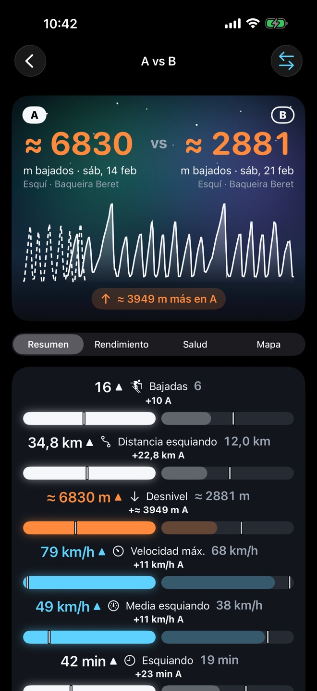
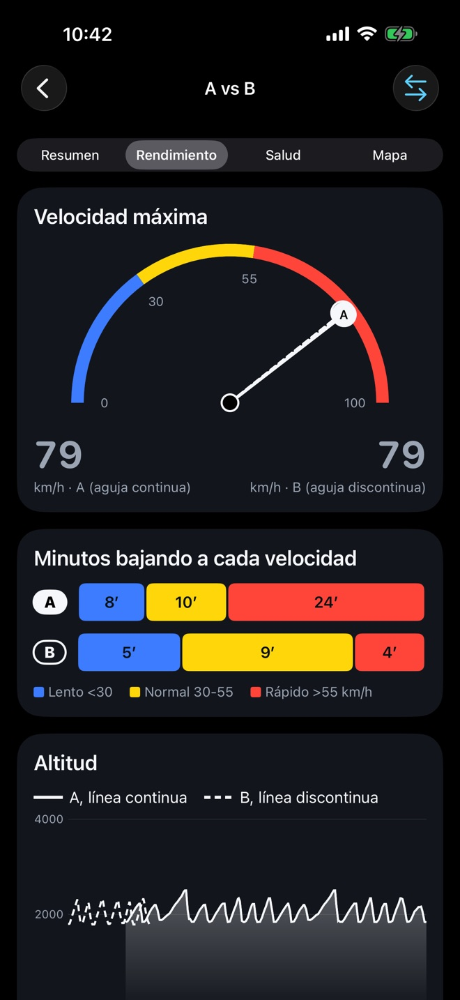
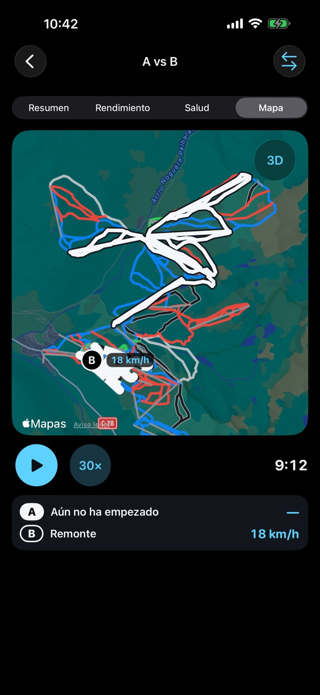
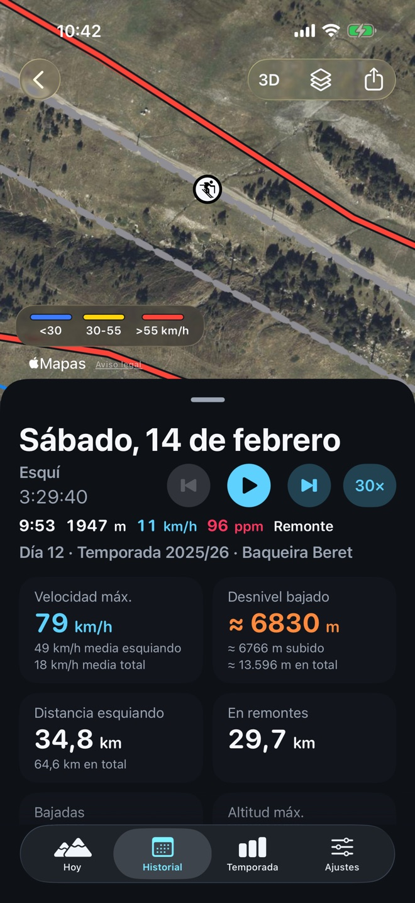

Cada bajada,
contada.
Velocidad, desnivel y cada bajada de tu día de esquí, en el iPhone y el Apple Watch.
Nuevo Compara dos días frente a frente

Tu día contra tu día.
Elige dos días de tu historial, de la misma estación o de otra temporada, y ponlos frente a frente: quién bajó más, quién fue más rápido y por cuánto. Cada cifra marca el día que gana, con la diferencia al lado y la media de tu temporada como referencia.
- Bajadas · 10 más en A 166
- Distancia esquiando · 22,8 km más en A 34,8 km12,0 km
- Velocidad máxima · Empate 79 km/h79 km/h
- Media esquiando · 9 km/h más en A 49 km/h40 km/h
- Tiempo esquiando · 24 min más en A 42 min18 min
Minutos bajando a cada velocidad
- ResumenBajadas, desnivel, distancia, velocidades y tiempos, cifra a cifra.
- RendimientoLas dos agujas en un velocímetro, tus minutos a cada velocidad y la altitud de los dos días.
- SaludCon el Apple Watch, tu pulso y tus kcal de un día frente al otro.
- MapaLos dos días a la vez sobre el mapa, cada uno con su marcador.


Dos días, a la misma hora.
En el mapa del comparador, los dos días se reproducen a la vez por hora del día, cada uno con su marcador y su velocidad. Y en el resumen de cada día, el perfil de altitud se mueve con el mapa: arrástralo para ir a cualquier momento, salta de una bajada a otra y mira la altitud y la hora de cada punto.


Preparado. 3, 2, 1…
Al pulsar «Empezar», una cuenta atrás a pantalla completa te da tiempo a guardar el iPhone y ponerte los guantes. La sesión arranca en 0:00:00, ni un segundo antes.
- ¿Con prisa? Toca la pantalla y empieza ya.
- Una vibración suave en cada número.
- Si bloqueas el iPhone, la sesión empieza igual.
Cada bajada, al momento.
Pulsa «Empezar» y olvídate. SnowTracker separa solo las bajadas de los remontes y te dice en cuál vas, a qué velocidad, cuánto has bajado y la inclinación de la pista. Con el iPhone bloqueado, la sesión sigue en la pantalla de bloqueo, con Pausar a mano.

Tu día entero, en el mapa.
La ruta del día, coloreada por velocidad sobre los mapas de Apple, con cada bajada numerada y, debajo, las pistas por dificultad y los remontes. Toca una bajada y el mapa la encuadra sola. Y si quieres revivirla, reprodúcela hasta 240 veces más rápido.

Las pistas de tu estación, ya en la app.
Las pistas por dificultad y los remontes de las estaciones de todo el mundo van dentro de la app: se ven debajo de tu ruta aunque no tengas cobertura, y en Hoy la app reconoce la estación en la que estás.
- Estados Unidos432
- Japón385
- Suiza293
- Austria275
- Francia245
- Italia213
Datos: © colaboradores de OpenStreetMap, con licencia ODbL. Descarga los datos.
Sabe en qué estación estás.
Al abrir la app, Hoy te dice en qué estación estás, lo que llevas en el día o, si hoy no has esquiado, tu último día: bajadas, desnivel, velocidad máxima y, con Apple Watch, pulso y kcal. Toca la estación para ver las cercanas o buscar otra. Elige esquí, snowboard o telemark y empieza.

Todo el día, de un vistazo.
Velocidad máxima y media, desnivel, distancia esquiando y en remontes, cada bajada con su velocidad y las pistas por las que fue, la dificultad del día por colores y el perfil de altitud. Ordena las bajadas por número o por velocidad.


Tu pulso, bajada a bajada.
Con el Apple Watch, cada día guarda tu pulso medio en las bajadas, el máximo y las kcal activas, y la gráfica del pulso de todo el día con las bajadas marcadas.

Cada metro cuenta.
El desnivel de toda la temporada, comparado con la anterior a estas alturas, con tus días, bajadas y kilómetros. Tu tiempo en la nieve (bajando, en remontes y parado), tus récords como medallas que abren su día, las pistas que más repites y tus estaciones en el mapa.


Tú esquías, el reloj apunta.
Empieza en el iPhone y llévalo en el bolsillo. En la muñeca ves la bajada en la que vas, la velocidad, el pulso y el desnivel, y pausas o bloqueas la pantalla desde la muñeca. El pulso y las kcal de cada día quedan en su resumen.


Pensada para la montaña.
En la pantalla de bloqueo
La sesión en una actividad en vivo, con el desnivel, el tiempo, las bajadas y la velocidad máxima (y, con el reloj, el pulso y las kcal), y Pausar sin abrir la app.
Nunca pierdes una sesión
Si la app se cierra o el iPhone se apaga, la sesión se recupera al volver. Te avisa cuando queda poca batería y, si llevas 30 minutos sin moverte, te pregunta si sigues esquiando.
Guarda en Salud
Cada día, como entrenamiento en la app Salud, con la ruta y, con el reloj, el pulso y las kcal.
Comparte tu día
Una imagen del día o de la temporada, con el mapa y tus cifras, o la ruta en GPX para llevarla a otras apps.
Esquí, snowboard o telemark
Elige tu actividad; las cifras se miden igual.
Tus unidades
Kilómetros o millas, metros o pies, según tu región, y VoiceOver lee cada cifra con su unidad.
Tus datos, en tu iPhone.
SnowTracker no tiene cuentas ni servidores propios. Tus sesiones se guardan en tu dispositivo y nadie más las ve.